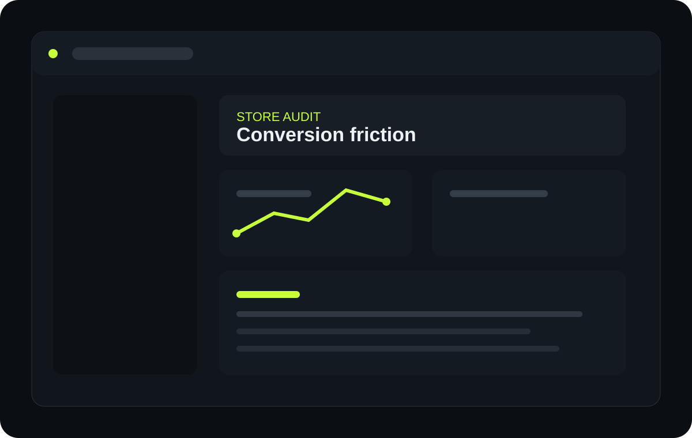

01

ProductFix / StoreFix AI
An evidence-first storefront auditing product designed to turn e-commerce purchase friction into specific findings and practical fixes.
My work
View repository ↗Product architecture, authentication and dashboard flows, audit persistence, findings/report states, data ownership concepts, deterministic analysis and URL security requirements including SSRF/private-network protection.